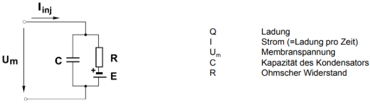
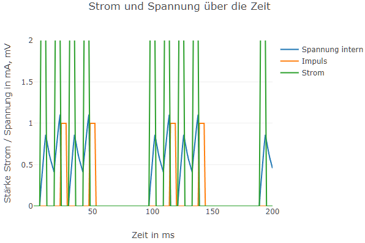
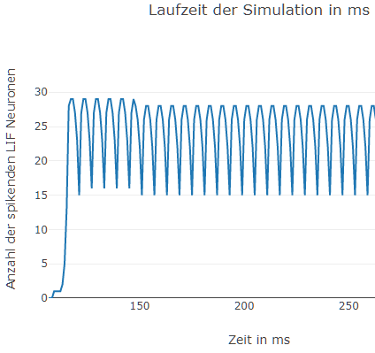

Auf dieser Seite kann mit zwei Leaky Integrate and Fire (LIF) Neurons experimentiert werden, welche in Reihe geschaltet sind. Das erste Neuron erhält hierbei einen konfigurierbaren Eingangsstrom, welcher für die in das Neuron eintreffenden Ströme steht. Die so entstehenden Spikes befeuern das dahinter liegende zweite LIF Neuron. Im Abschnitt Dokumentation finden sie eine ausführliche Erklärung hierzu.
- Zeitdauer der Simulation - Bitte geben Sie die gesamte Zeitdauer der Simulation in ms an.
- Länge des Zeitschritts für die Berechnung - Nach jedem Zeitschritt in ms erfolgt eine neue Berechnung. Für 1 ms somit je Millisekunde eine Berechnung.
- Zeitdauer des Impulses - Wird als Stromart Impuls gewählt, bestimmt dies die Länge des Impulses in ms.
- Höhe des Stroms - Bei einem Impuls ist dies die Höhe bei einem Impuls, bei Zufall der maximale Stromwert in mA. Der minimale Wert beträgt immer 0 mA.
- Wählen Sie die Stromart - Grundsätzlich stehen zwei Arten zur Verfügung: Ein ideal gepulster oder ein zufällig generierter Strom.
- Widerstand zum nächsten Neuron - Hier wird der Widerstand der Verbindung beider Neuronen in Ohm festgelegt. Ein kleiner Widerstand führt zu einem hohen Strom und steht für eine starke Verbindung.
Aktueller Wert:
Aktueller Wert:
Aktueller Wert:
Aktueller Wert:
Aktueller Wert:
Auf dieser Seite wird ein Netzwerk aus Leaky Integrate and Fire (LIF) Neuronen simuliert und ausgewertet. Verschiedene Parameter können dabei frei gewählt werden. Der Berechnungsschritt ist mit einer Millisekunde fest vorgegeben, jedoch erfolgt die Ausgabe in 100 ms Schritten. 100 ms stellen somit 1 ms in der Simulation dar. Im Abschnitt Dokumentation finden sie eine ausführliche Erklärung hierzu.
- Anzahl der Neuronen - Die Anzahl der Neuronen, aus denen das Netz gebildet wird. Als Netzform findet ein "Ball" Anwendung, wobei jedes Neuron mit jeden anderen verbunden ist.
- Untere Begrenzung des Widerstandes - Gibt die untere Grenze der Verbindungswiderstände in Ohm an. Die Widerstände der Verbindungen selbst werden zufällig aus dem gegebenen Bereich ausgewählt.
- Obere Begrenzung des Widerstandes - Gibt die obere Grenze der Verbindungswiderstände in Ohm an. Die Widerstände der Verbindungen selbst werden zufällig aus dem gegebenen Bereich ausgewählt.
- Zeitdauer eines Impulses - Wird als Stromart Impuls gewählt, bestimmt dies die Länge des Impulses in ms.
- Minimale Höhe des Stroms - Bei einem Impuls ist dies die Höhe im Ruhezustand (kein Impuls), bei Zufall der minimale Stromwert in mA.
- Maximale Höhe des Stroms - Bei einem Impuls ist dies die Höhe bei einem Impuls, bei Zufall der maximale Stromwert in mA.
- Wählen Sie die Stromart - Grundsätzlich stehen zwei Arten zur Verfügung: Ein ideal gepulster oder ein zufällig generierter Strom.
Aktueller Wert:
Aktueller Wert:
Aktueller Wert:
Aktueller Wert:
Aktueller Wert:
Aktueller Wert:
Jedes Objekt stellt ein LIF Neuron des Graphen dar. Spikende Neuronen werden in rot dargestellt.
Das Diagramm zeigt die Anzahl der Spikes je Millisekunde in einem Scatter Plot an. Weitere Informationen zur Bedienung können Sie hier erhalten. Das Diagramm bleibt hierbei über die Änderung des Netzwerkes hinaus erhalten. Erst bei einem Neuladen der Seite, wird es zurück gesetzt.
Der Graph zeigt das aktuell verwendete Netzwerk. Knoten stellen die LIF Neuronen dar, die Kanten die Verbindungen untereinander.
Verwendete Frameworks
-
Bootstrap 5
Bootstrap ist ein auf HTML und CSS basierendes Frontend CSS Framework für Webseiten. Dem entsprechend fokussiert es auf das Design und Layout einer Seite sowie ihrer Oberflächenelemente und wird hierfür innerhalb dieser Anwendung verwendet.
-
D3 - Data Driven Documents
Bei D3 handelt es sich um eine JavaScript Bibliothek, welche zur Manipulation von HTML Dokumenten verwendet werden kann. D3 fokussiert hierbei auf die datengetriebene Darstellung von Daten und deren (interaktiven) Visualisierung. Auch wenn D3 bereits etwas älter ist, so ist es nach wie vor weit verbreitet, was nicht zuletzt auch an dessen Umfangreichen Funktionalität liegt. In dieser Anwendung wurde es zum Erstellen des Force Directed Graphen und im Hintegrund für die Seitenmanipulation verwendet. Der Einsatz von D3 gestaltet sich theoretisch in der Praxis recht einfach, jedoch ist die anfängliche Lernkurve eher als steil anzusehen.
-
Plotly
Plotly ist eine verbreitete Grafikbibliothek mit Schnittstellen zu verschiedenen Sprachen wie Python, R oder JavaScript. In dieser Lösung wird Plotly als leichtgewichtige, aber schnelle Lösung zum Erstellen von Scatter Plots verwendet.
Umsetzung der Aufgabe
Die hier vorgestellte Umsetzung der Aufgabenstellung teilt sich in zwei einzelne Lösungen. Bei der ersten Lösung handelt es sich um eine konfigurierbare Simulation zweier verbundener LIF Neuronen. Die zweite Lösung beinhaltet eine Simulation zum Verhalten des LIF Neurons innerhalb eines größeren Netzwerkes. Der gesamte Source Code ist frei auf GitHub verfügbar. Daher wird an dieser Stelle nicht zu tief auf den Code eingegangen.
Leaky Integrate and Fire (LIF) Neuron
Ein Leaky Integrate and Fire (LIF) Neuron zeichnet sich grundlegend dadurch aus, dass mit zunehmenden Signaleingang ein Spannungspotential aufgebaut wird. Wird eine bestimmte Grenzspannung (Threshold) überschritten, so kommt es seinerseits ebenfalls zu einer Entladung in Form eines Impulses (Spike). Das im Neuron vorhandene Potential bricht zusammen und nach einer Erholungsphase beginnt der Vorgang von neuen. Es gleicht hierbei sehr dem Verhalten menschlicher Neuronen im Gehirn.
Das hier verwendete Modell basiert ursprünglich vom Konzept her auf die hier zu findende Modellierung von David Corvoysier aus dem Jahr 2018. Es basiert auf der Modellierung biologischer Neuronen als vereinfachte RC-Schaltung, wie in der folgenden Abbildung zu sehen ist. Hierdurch kann sie mit etablierten Formeln berechnet werden. Eine sehr gute Einführung zum Thema LIF Neuronen der FU Berling findet sich auch hier.

Das mit Hilfe von Tensor Flow umgesetzte Modell wurde hierfür in JavaScript neu implementiert und als Klasse LIFNeuron in dieser Anwendung verwendet. Insbesondere wurden die Algorithmen zur Berechnung der Spannungen und Ströme übernommen. Ein Vergleich der im Lauf produzierten Daten beider Umsetzungen konnte die korrekte Implementierung zeigen.
Zur Vereinfachung wurden sowohl die Zeitspanne zwischen zwei Spikes als auch deren Vorgängerspikes in der Modellierung nicht berücksichtigt. Zudem wurde die Höhe eines Spike gleich dem Threshold gesetzt und dessen Länge auf einen Berechnungsschritt. Innerhalb dieser Lösung wird bei der Berechnung mit einer einheitlichen Schrittlänge von einer Millisekunde gerechnet. Grundsätzlich wird zudem von idealen Impulsen ausgegangen, deren Kanten ideal und nicht abgeflacht sind. Innerhalb der Ausgaben kann gleichwohl der Eindruck erweckt werden, als wenn dies nicht so sei.
Im Kern besteht das so umgesetzte Modell lediglich aus drei grundlegenden Funktionen, welche durch eine zentrale Logik in der Funktion get_potential_op aufgerufen werden:
get_integrating_op: Generiert durch den Stromfluss einen Anstieg des Potentials
get_firing_op: Generiert einen Spike, sofern der Grenzwert überschritten wird
get_resting_op: Generiert eine Phase zur Regeneration
Für den zweiten Teil der Lösung wurde die Klasse SynapticLIFNeuron Neuron in die Anwendung eingeführt. Sie basiert auf der vorherigen Klasse, unterstützt jedoch als wichtigste Erweiterung beliebig viele Signaleingänge sowie zusätzliche Funktionalität zur Ausgabe ihres Status.
Connection
Neuronen innerhalb eines Netzwerkes müssen verbunden werden. Die Klasse Connection bietet diese Funktionalität und ist in erster Linie die Beschreibung zwei SynapticLIFNeuronen als zusammen gehörend. Sie repräsentiert somit die Dendriten und Axone biologischer Neuronen im Gehirn.
Verbindungen zwischen Neuronen in biologischen Systemen sind unterschiedlich stark ausgebildet. In künstlichen Systemen wie beispielsweise einem Perzeptron geschieht dies durch die Wichtung der an den Eingänge anliegenden, numerischen Werte.
Dies ist hier nicht so einfach möglich. Ein LIFNeuron funktioniert durch die Simulation eines Stromflusses, was zur Emittierung von Spikes führt. Ein wichtiger Punkt der hier gezeigten Lösung ist daher die Transformation eines ausgehenden Spikes (Potential) zu einem eingehenden Strom. Dies leistet die Klasse Connection durch das Hinzufügen eines Widerstandes. Der Widerstand kann als Qualität der Verbindung zweier LIFNeuronen interpretiert werden:
Hoher Widerstand: Die Verbindung ist schlecht. Selbst ein hohe Spannung führt nur zu einem kleinen Strom.
Kleiner Widerstand: Die Verbindung ist gut. Selbst eine kleine Spannung führt bereits zu einem Stromfluss. Größere Spannungen verursachen größere Ströme.
Die Höhe der durch die Verbindung fließenden Stroms errechnet sich hierbei durch das Ohm' sche Gesetz. Innerhalb dieser Anwendung wird der Widerstandswert entweder fest (Lösung 1) oder zufällig (Lösung 2) eingestellt. Im zweiten Fall wird aus dem vorgegebenen Bereich ein zufälliger Wert gewählt.
Lösung 1
Bei der ersten Lösung steht die Simulation eines einzelnen LIF Neurons sowie zweier in Reihe geschalteter Neuronen im Vordergrund.
Hierbei erhält das erste Neuron einen konfigurierbaren Eingangsstrom, welcher für die in das Neuron eintreffenden Ströme steht. Der Ausgang des Neurons ist wiederum mit dem Eingang des zweiten Neurons über eine Connection verbunden. Die Spikes des ersten Neurons generieren somit einen Stromfluss in das zweite Neuron. Die Höhe ist hierbei vom einstellbaren Widerstand der Connection abhängig.
Grundsätzlich kann zwischen einer getakteten Stromquelle sowie einer zufälligen Stromkurve gewählt werden. Insbesondere die erste Art stellt hierbei das Äquivalent zu einem Spike Train dar.
Auf der rechten Seite werden im oberen Graph der Strom, der Spannungsverlauf sowie die Spikes des Neurons angezeigt. Wie oben beschrieben richtet sich die Dauer der Ruhezeit nach den zugrundeliegenden Zeitschritten, hier eine Millisekunde. Der untere Graph zeigt des Status des zweiten Neurons.
Die Simulation der Lösung 1 durchläuft bei jeder Änderung die gesamte Simulation von maximal 200 ms und bringt diese neu zur Darstellung.
Lösung 2
Die zweite Lösung bietet die Simulation eines Netzwerkes aus LIF Neuronen. Im Gegensatz zur ersten Lösung läuft die Simulation nach ihren Start für eine unbestimmte Zeit fort, kann aber auch pausiert oder abgebrochen werden.
Änderungen an den zugrunde liegenden Werten führen zu der Erzeugung eines neuen Graphen mit neuen Widerstandswerten der Verbindungen. Dies muss bei der Arbeit berücksichtigt werden.
Als Netzwerk wird ein Ball gewählt, wobei jedes Neuron mit jedem anderen Neuron verbunden ist. Die Stärke der Verbindungen wird hierbei zufällig festgelegt. Grundsätzlich kann auch hier zwischen einer getakteten Stromquelle sowie einer zufälligen Stromkurve gewählt werden.
Auf der rechten Seite werden verschiedene Ausgaben zur Netzaktivität ausgegeben. Als erstes erfolgt für jedes Neuron eine eigene Visualisierung als abgerundete Box. Bei laufender Simulation erscheinen die beteiligten Neuronen grün, rot im Falle eines Spikes.
In dem darunter liegenden Diagramm wird die Anzahl der spikenden Neuronen je Zeitschritt (1 ms) eingetragen. Das Diagramm bietet Platz für 20 Sekunden und somit 20.000 Einträgen. Während der Simulation ist die so entstehende Auswertung nur wenig aussagekräftig. Erst nach Abschluss der Simulation zeigt sich deren Nutzen, da sie erhalten bleibt und somit im Nachgang analysiert werden kann. Hierfür bieten die Diagramme von Plotly nativ eine Reihe von Möglichkeiten.
Als letzte Ausgabe wird der Graph des Netzwerkes ausgegeben, um eine Vorstellung der Komplexität zu erhalten. In der aktuellen Lösung verfügt der Graph über keine nennenswerte Interaktivität, ist jedoch hierfür vorbereitet.
Ergebnisse
Auch bei einer vereinfachten Modellierung lassen sich aus der Beschäftigung mit den Simulationen eine Reihe an Erkenntnissen gewinnen.
Strom
Für die erste Lösung soll hier auf Beobachtungen zum Verhalten bei Strom- und Widerstandänderungen eingegangen werden. Hohe Ströme führen zu einer hohen Spikefolge, also tendenziell zu einem Spike Train mit eher dich zusammen liegenden Spikes. Die folgende Grafik zeigt die Ausgabe eines Neurons bei einem gepulsten Strom vom 1,304 mA:

Im Vergleich die Ausgabe bei einem Strom von 0,986 mA:

In den folgenden drei Grafiken ist die Ausgabe des zweiten in Reihe geschalteten Neurons zu sehen. Hierbei wurde bei konstanter Eingangsspannung von 0,986 mA (obiges Diagramm) lediglich der Widerstand verändert. Für einen relativ hohen Widerstand von 0,669 Ohm, der für eine "schlechte" Verbindung steht, zeigt sich ein langsames Aufschaukeln des Neurons, jedoch noch kein Spiken:

Wird der zu Grunde liegende Widerstand auf 0,475 Ohm verringert, was einer stärkeren Verbindung der beiden Neuronen entspricht, so spikt das Neuron mit einer kleineren Frequenz als Reaktion auf den nunmehr größeren Strom:
Wird im weiteren Verlauf der Widerstand nochmals auf dann 0,038 Ohm verringert, so stellt man eine sehr hohe Korrelation beim Spiken fest, was an Hebb's Rule erinnert: Wire together, Fire together sofern die Verbindung stark genug ist. Beide Neuronen feuern zusammen:

Anzahl spikender Neuronen
Bei der zweiten Lösung möchte ich den Fokus auf den Einfluss der Anzahl der Neuronen sowie der Stromstärke beim Anlaufen des Netzes legen. Zu berücksichtigen ist hierbei, dass bei einer Änderung des Anzahl an Neuronen oder der Widerstände das Netz neu erstellt und die Verbindungen mit neuen und zufälligen Widerstandswerten belegt wird. Umso erstaunlicher sind die Ergebnisse.
Zunächst soll der Einfluss der Anzahl an Neuronen untersucht werden. Der erste betrachtete Verlauf erfolgt mit den folgenden Parametern: 25 Neuronen, Widerstand von 0,166 Ohm bis 2,698 Ohm, Stromart: Puls mit einer Pulslänge von 432 ms, Stromstärke zwischen 2,677 mA und 3 mA:

Es ist zu erkennen, dass das Netz schnell an Aktivität gewinnt, um nach einer Zeit einen periodischen Verlauf zu zeigen.
Im nächsten Versuch wurden die Anzahl der Neuronen bei gleicher Stromstärke auf fünf reduziert. Die Parameter hierbei sind: 5 Neuronen, Widerstand von 0,166 Ohm bis 2,698 Ohm, Stromart: Puls mit einer Pulslänge von 432 ms, Stromstärke zwischen 2,677 mA und 3 mA:

Es zeigt sich, dass zwar zügig Aktivität vorhanden ist und Neuronen spiken, der Graph jedoch keinen periodischen Verlauf zu haben scheint. Eine zu beweisende These ist, dass größere Netzwerke ausgeglichener arbeiten, kleinere eher zu einem sprunghaften Verhalten neigen.
Als nächstes soll der Einfluss der Stromstärke näher untersucht werden. In einer erste Simulation wird die Stromstärke zwischen 1mA und 1,503 mA geschaltet. Die Parameter sind: 30 Neuronen, Widerstand von 0,192 Ohm bis 2,525 Ohm, Stromart: Puls mit einer Pulslänge von 44 ms, Stromstärke zwischen 1 mA und 1,503 mA:

Zu erkennen ist die relativ große Zeitspanne, bis es zu einem ersten Pulsen kommt, das sich zunächst langsam, dann Explosionsartig ausweitet um dann wieder in einen periodischen Verlauf über zu gehen. Eine Analogie währe eine nur kleine Aktivität, welche jedoch regelmäßig auftaucht. Erst mit der Zeit gewinnt sie an Einfluss.
Wird der Strom, oder in der Analogie die Aktivität stärker, wirkt sie schneller auf das Netz ein. Das folgende Diagramm entstand mit den folgenden Parametern: 30 Neuronen, Widerstand von 0,192 Ohm bis 2,525 Ohm, Stromart: Puls mit einer Pulslänge von 44 ms, Stromstärke zwischen 1 mA und 2,514 mA
Zu sehen ist, dass das Netz sehr schnell aktiviert wird, und nach kurzer Zeit einen periodischen Verlauf annimmt. Eine zu beweisende These ist, dass in einen biologischen System Aufmerksamkeit zu einer höheren Aktivität führt, welche wiederum schneller auf das neuronale Netz wirkt. Aus den oben gezeigten Verläufen für die erste Lösung konnte bereits entnommen werden, dass hohe Ströme die Anzahl der Spikes vergrößern. Dies kann als eine Ursache für den Verlauf angenommen werden.